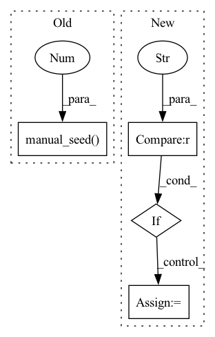

Pattern ID :27969
Before Change
[prompt], generator=generator, guidance_scale=6.0, num_inference_steps=1, output_type="numpy"
).images
generator = torch.manual_seed(0 )
image = ldm(
[prompt], generator=generator, guidance_scale=6.0, num_inference_steps=2, output_type="numpy"
).images
After Change
return CLIPTextModel(config)
def test_inference_text2img(self):
if torch_device != "cpu" :
return
unet = self.dummy_cond_unet
scheduler = DDIMScheduler()
vae = self.dummy_vae
bert = self.dummy_text_encoder
tokenizer = CLIPTokenizer.from_pretrained("hf-internal-testing/tiny-random-clip")
ldm = LDMTextToImagePipeline(vqvae=vae, bert=bert, tokenizer=tokenizer, unet=unet, scheduler=scheduler)
ldm.to(torch_device)
ldm.set_progress_bar_config(disable=None)
prompt = "A painting of a squirrel eating a burger"
// Warmup pass when using mps (see /뤌)
if torch_device == "mps":
generator = torch.manual_seed(0)
_ = ldm(
[prompt], generator=generator, guidance_scale=6.0, num_inference_steps=1, output_type="numpy"
).images
device = torch_device if torch_device != "mps" else "cpu"
generator = torch.Generator(device=device).manual_seed(0)
image = ldm(
[prompt], generator=generator, guidance_scale=6.0, num_inference_steps=2, output_type="numpy"
).images
device = torch_device if torch_device != "mps" else "cpu"
generator = torch.Generator(device=device).manual_seed(0)
image_from_tuple = ldm(
[prompt],In pattern: SUPERPATTERN
Frequency: 3
Non-data size: 4
Instances Fragment ID: 82895155
Project Name: huggingface/diffusers
Commit Name: c6d0dff4a39137ff206af76b655f7bcf3cadaf32
Time: 2022-12-16
Author: patrick.v.platen@gmail.com
File Name: tests/pipelines/latent_diffusion/test_latent_diffusion.py
M Class Name: LDMTextToImagePipelineFastTests
N Class Name: LDMTextToImagePipelineFastTests
M Method Name: test_inference_text2img(1)
N Method Name: test_inference_text2img(1)
M Parent Class: unittest.TestCase
N Parent Class: unittest.TestCase
M File Name: tests/pipelines/latent_diffusion/test_latent_diffusion.py
N File Name: tests/pipelines/latent_diffusion/test_latent_diffusion.py
M Start Line: 94
M End Line: 99
N Start Line: 75
N End Line: 105
Before Change
out = pipe(prompt, num_inference_steps=2, generator=generator, output_type="numpy").images
pipe_2 = StableDiffusionPipeline.from_pretrained("hf-internal-testing/tiny-stable-diffusion-torch")
generator_2 = torch.Generator(device=torch_device).manual_seed(0 )
out_2 = pipe_2(prompt, num_inference_steps=2, generator=generator_2, output_type="numpy").images
assert np.max(np.abs(out - out_2)) < 1e-3
After Change
"hf-internal-testing/tiny-stable-diffusion-torch", safety_checker=None
)
pipe = pipe.to(torch_device)
if torch_device == "mps" :
// device type MPS is not supported for torch.Generator() api.
generator = torch.manual_seed(0)
else:
generator = torch.Generator(device=torch_device).manual_seed(0)
out = pipe(prompt, num_inference_steps=2, generator=generator, output_type="numpy").images Fragment ID: 82895156
Project Name: huggingface/diffusers
Commit Name: 7d0c2729399c3ce019a30fc175b973e892fd5fc3
Time: 2022-11-09
Author: anton@huggingface.co
File Name: tests/test_pipelines.py
M Class Name: DownloadTests
N Class Name: DownloadTests
M Method Name: test_download_no_safety_checker(1)
N Method Name: test_download_no_safety_checker(1)
M Parent Class: unittest.TestCase
N Parent Class: unittest.TestCase
M File Name: tests/test_pipelines.py
N File Name: tests/test_pipelines.py
M Start Line: 96
M End Line: 100
N Start Line: 92
N End Line: 105
Before Change
N = 99997
result_tolerence = 1e-2
gradient_tolerance = 2e-2
torch.manual_seed(0 ) // we have to seed torch to get reproducible results
// Define integrators
integrators = [MonteCarlo(), Trapezoid(), Simpson(), Boole(), VEGAS()]After Change
domain.requires_grad = True
extra_args = {}
if type(integrator).__name__ == "MonteCarlo" :
extra_args["seed"] = 0
result = integrator.integrate(
some_function, dim=1, N=N, integration_domain=domain, **extra_args
) Fragment ID: 82895157
Project Name: esa/torchquad
Commit Name: fb4b94c7d9cccc4b57ec76edd95af79bd30a8f9e
Time: 2022-03-14
Author: ga84muv@mytum.de
File Name: torchquad/tests/gradient_test.py
M Class Name: AnonimousClass
N Class Name: AnonimousClass
M Method Name: test_gradients(0)
N Method Name: test_gradients(0)
M Parent Class:
N Parent Class:
M File Name: torchquad/tests/gradient_test.py
N File Name: torchquad/tests/gradient_test.py
M Start Line: 36
M End Line: 36
N Start Line: 39
N End Line: 49